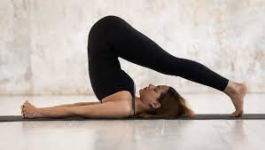
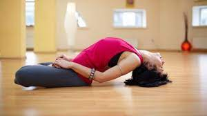
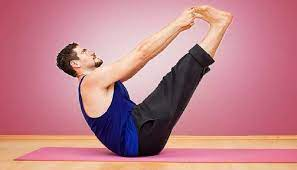
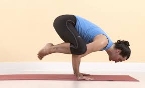
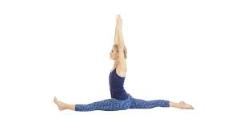

Following are the Yoga Asanas recommended for a beginner
Vajrasana
Naukasana
Click on any Asana to know more about it.
Following are the Yoga Asanas recommended for intermediate level
Matsyasana
Halasana
Click on any Asana to know more about it.
Following are the Yoga Asanas recommended for advanced level
Kakasana
Hanumanasana
Click on any Asana to know more about it.
HALASANA (Plow pose)

Steps to follow:
Lie on your back with your arms beside you, palms downwards.
As you inhale, use your abdominal muscles to lift your feet off the floor, raising your legs vertically at a 90-degree angle.
Continue to breathe normally and supporting your hips and back with your hands, lift them off the ground.
Allow your legs to sweep in a 180-degree angle over your head till your toes touch the floor. Your back should be perpendicular to the floor. This may be difficult initially, but make an attempt for a few seconds.
Hold this pose and let your body relax more and more with each steady breath.
After about a minute (a few seconds for beginners) of resting in this pose, you may gently bring your legs down on exhalation.
Video reference:
Benefits of performing Halasana:
Strengthens and opens up the neck, shoulders, abs and back muscles.
Calms the nervous system, reduces stress and fatigue.
Tones the legs and improves leg flexibility.
MATSYASANA (Fish pose)

Steps to follow:
Come up to your elbows with your forearms flat on the mat and your upper arms perpendicular to the floor.
Keep your forearms in place and puff up your chest by rolling your shoulders back and tucking your shoulder blades firmly onto your back. You should feel your body creating a backbend.
Press your palms into the mat. You can tuck your hands under your butt if that feels like a more stable position for them.
Lower the crown (very top) of your head back until it comes to the floor, opening your throat.
Keep your legs engaged and your toes active throughout.
To come out, press strongly into your forearms and raise your head off the floor. Then release your upper body to the mat.
Video reference:
Benefits of performing Matsyasana:
Promotes respiration
Relieves stress
Strengthens spine
NAUKASANA (Boat pose)

Steps to follow:
Lie on your back with your feet together and arms beside your body.
Take a deep breath in and as you exhale, lift your chest and feet off the ground, stretching your arms towards your feet.
Feel the tension in your navel area as the abdominal muscles contract.
Keep breathing deeply and easily while maintaining the pose.
As you exhale, come back to the ground slowly and relax.
Video reference:
Benefits of performing Naukasana:
Useful for people with hernia
Tones the leg and arms muscles.
Strengthens the back and abdominal muscles.
VAJRASANA (Diamond pose)
Steps to follow:
Start by kneeling on the floor. Consider using a yoga mat for comfort.
Pull your knees and ankles together and point your feet in line with your legs. The bottoms of your feet should face upward with your big toes touching.
Exhale as you sit back on your legs. Your buttocks will rest on your heels and your thighs will rest on your calves.
Put your hands on your thighs and adjust your pelvis slightly backward and forward until you’re comfortable.
Breathe in and out slowly as you position yourself to sit up straight by straightening your spine. Use your head to pull your body upward and press your tailbone toward the floor.
Straighten your head to gaze forward with your chin parallel to the floor. Position your hands palms down on your thighs with your arms relaxed.
Video reference:
Benefits of performing Vajrasana:
Aids in digestion.
Prevents constipation.
Relieves knee pain
KAKASANA (Crow pose)

Steps to follow:
Stand at the top of your mat in Tadasana, Mountain Pose. With your arms relaxed by your sides, your feet should be in position at hip width.
Come into a squat by slowly bending your knees and lowering your hips. While squatting, keep your feet as close together as you can. Open your thighs so they’re just a bit wider than your body. If you find your heels lifting off the floor you can fold the mat to place underneath them.
Push your body forward slightly while placing your upper arms along the inside of your knees. Bring your hands into the prayer position. This beginning stage of Crow pose is Malasana, the Garland pose. Rest here for a minute or two.
Slowly place your hands on the mat with fingers spread, keeping them palm down at shoulder distance. Push slightly into your hands, with the weight evenly distributed across both.
Push your shins up against the back of your arms. Then slowly pull your knees into your underarms as closely as you can.
While leaning forward, lift onto the balls of your feet. While keeping your back rounded, pull in your stomach muscles. Your lower back and tailbone should be tucked into position towards the heels.
Find a focal point between your hands on the floor directly in front of you or slightly ahead.
While leaning forward just a bit, lift both your feet off the floor and pull your heels in toward your bottom. If you’re unable to lift both feet at once, start with first one and then lift the other.
Balance your upper body and legs on the back of the upper arms. If possible, touch the big toes together.
Hold the Crow pose for one minute before releasing back into Malasana. Repeat the pose 3 or 4 more times.
Video reference:
Benefits of performing Kakasana:
Alleviates heart burn and acid reflux
Eases lower back pain.
Encourages inner focus and concentration.
HANUMANASANA (Monkey pose)

Steps to follow:
Start in Lunge Pose with one foot in front, placing your knee over your ankle.
Place both hands on the floor next to your front leg.
The back knee is on the floor, toes are pointed away from you.
Start sliding the front heel forward. You might want to try this on non-sticky surface which allows you to slide easily.
Lift the ball of the front foot up and slide the front leg as far as your hamstrings allow you to. You might first want to stop at Ardha Hanumanasana, the Half Split Pose, take a few breaths there, and then continue.
As your front leg straightens, start pushing the back knee backwards so your back thigh is getting closer towards the floor. Make sure your back leg remains straight from hip and is not extending towards either side.
Keep hips square towards the front of the mat and focus on leveling the pelvis instead of reaching to the ground. Press your inner thighs towards each other to help support the pelvis.
When you reach the ground, straighten your spine and lift up your hand towards the sky.
Start from staying in the pose for 20 seconds and work your way up to 1 minute.
To come out, carefully lean to the side of your front leg, sit on your outer hip, and bring the legs together.